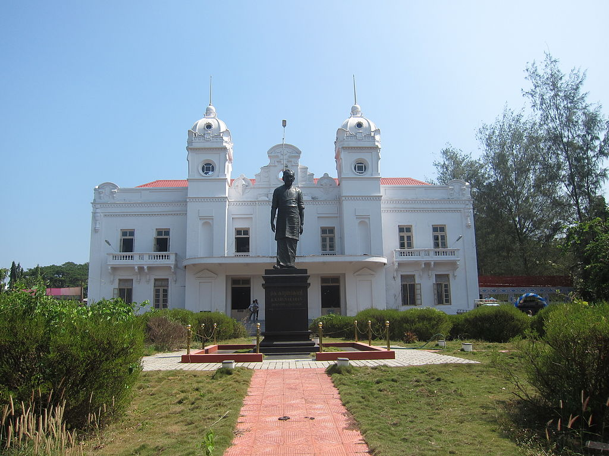
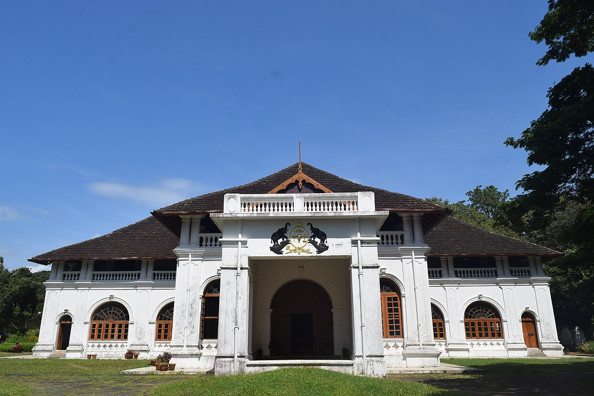
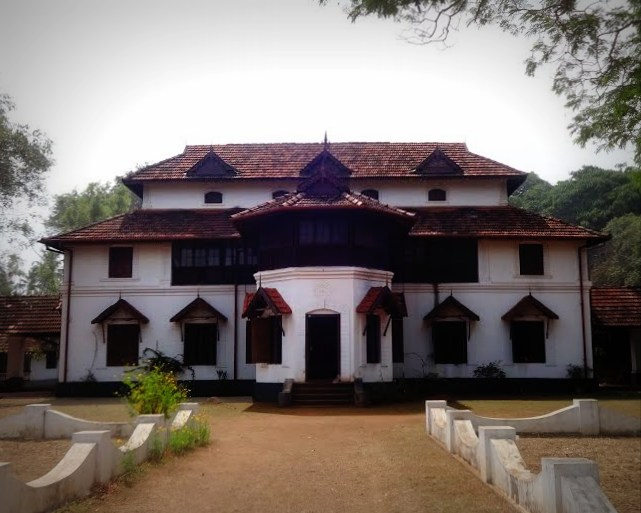

Thrissur
Thrissur is known as "Cultural Capital of Kerala" due of its cultural, spiritual and religious leanings throughout history.The term Thrissur is the abbreviated anglicized form of the Malayalam word ‘THRISSIVAPERUR.Thrissur was also known as “VRISHABHADRIPURAM” and “TEN KAILASAM” in ancient days.

TOP DESTINATIONS

Sakthan Thampuran palace

Mural Art Museum

Zoological Park